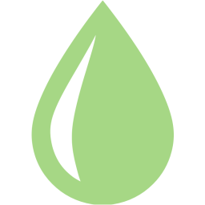
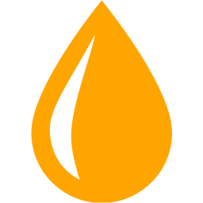

<!DOCTYPE html>
<html>
<head>
    <title>Land use changes and anthropogenic impacts due to rice fields in Santa Fe (Argentina)</title>
    <meta name="viewport" content="width=device-width, initial-scale=1.0, maximum-scale=1.0, user-scalable=no">
    <link rel="stylesheet" href="css/leaflet.css">
    <script src="js/leaflet.js"></script>
    <style>
        body {
            padding: 0;
            margin: 0;
        }

        html, body, #map {
            height: 100vh; /* Full viewport height */
            width: 100vw;  /* Full viewport width */
            margin: 0;
            padding: 0;
            overflow: hidden; /* Optional: Prevents scrolling */
        }
        
        /* CLASS and id style settings */
        /* Style for the info object*/
        .info {
            background-color: #afc3c3;
            padding: 0px;
            border-radius: 6px;
            /*box-shadow: 0 0 8px rgba(0, 0, 0, 0.3);*/
            font-family: Arial, sans-serif;
        }

        /* Style layers controller panel */
        #layers_panel {
            width: 220px;
            padding: 6px;  /* optional: adjust padding inside the panel */
        }

        #layers_panel .panel-title {
            margin: 0;        /* remove top and bottom margin */
            padding: 0 0 4px; /* optional: keep a small bottom padding */
            font-size: 17px;  /* adjust size if needed */
            color:#133131;
        }

        #layers_panel .leaflet-control-layers {
            margin-top: 0; /* reduce space above layers selector */
            width: 100%;
            padding: 0px;
            background: transparent !important;
            border: none !important; /* Make the border line transparent */
            color:#0a090a; /* Change text color */
            font-family: Arial, sans-serif;
            font-size: 13px;
        }


        /* Style dropdown button */
        #ddbutton_control{
            /*background-color: #afc3c3;*/
            width: 220px;
            padding: 6px;
            /*border-radius: 6px; */
        }

        #ddbutton_control .dropdown {
            background-color: #afc3c3;
            width: 100%;         /* make dropdown fill container */
            padding: 2px 6px;
            border: none;
            outline: none;
            color:#0a090a;  /* Change text color */
            font-family: Arial, sans-serif;
            font-size: 14px;
            font-weight: bold;
            
        }

        #ddbutton_control .panel-title {
            margin: 0;        /* remove top and bottom margin */
            padding: 0 0 4px; /* optional: keep a small bottom padding */
            font-size: 17px;  /* adjust size if needed */
            color:#133131;
            font-family: Arial, sans-serif;
        }

        #ddbutton_control .dropdown option {
            font-size: 14px;
            padding: 4px;
        }


        /* Style for wqi panel */
        #dynamic-title_wqi {
            margin: 5px;
            padding: 0 0 4px;
            font-size: 17px;
            color: #133131;/* Customize title color */
            margin-bottom: 5px;
        }

        #wqi_value {
            margin: 5px;
            padding: 0 0 0px;
            font-size: 20px;
            font-weight: bold;
            color: black;
        }

        #current_feature_wqi {
            margin: 5px;
            padding: 0 0 0px;
            font-size: 14px;
            color: black;
        }

        /* Style for IBRI panel */
        #ibri_value {
            margin: 8px;
            padding: 0 0 0px;
            font-size: 20px;
            font-weight: bold;
            color: black;
            text-align: center;   /* ✅ Center text */
            display: block;       /* Ensures it takes full width */
            width: 100%; 
        }

        /* Style for herbcs panel */
        #dynamic-title_herbcs {
            margin: 5px;
            padding: 0 0 4px;
            font-size: 13px;
            color: #133131;/* Customize title color */
            margin-bottom: 5px;
        }

        #current_feature_herbcs {
            margin: 5px;
            padding: 0 0 0px;
            font-size: 12px;
            color: black;
        }

        /* Style for the entire legend container */
        #legend_panel .legend-title {
            margin: 5px;
            padding: 0 5px 2px;
            font-size: 17px;
            color: #133131;/* Customize title color */
            margin-bottom: 5px;
            font-weight: bold;
        }

        #legend_panel .legend-item {
            margin: 5px;
            padding: 0 0 4px;
            font-size: 14px;
            color:  black;/* Customize title color */
            margin-bottom: 5px;
            font-weight: bold;
        }

        /* Style for layers controller panel */
        #panel {
            background-color: #697f3dd6;
            padding: 10px;
            border-radius: 6px;
            box-shadow: 0 0 8px rgba(0, 0, 0, 0.3);
            font-family: Arial, sans-serif;
        }

        .custom-control {
        padding: 0; /* Add space between the controls */
        }
    

        /* Responsive design for smaller screens in portrair orientation */
        @media (max-width: 600px) and (orientation: portrait) {

            /* Style layers controller panel */
                #layers_panel {
                    max-width: 50%;
                }

                #layers_panel .panel-title {
                    font-size: 15px;  /* Reduce 2 points */
                }

                #layers_panel .leaflet-control-layers {
                    font-size: 12px; /* Reduce 1 point */
                    width: 95%;
                }

                /* Style dropdown button */
                #ddbutton_control{
                    max-width: 50%;
                }

                #ddbutton_control .dropdown {
                    width: 100%;         /* make dropdown fill container */
                    font-size: 12px;
                    
                }

                #ddbutton_control .panel-title {
                    font-size: 15px;  /* adjust size if needed */
                }

                /* Style for wqi panel */
                #wqi_panel {
                    max-width: 45%;
                    pointer-events: none; /* clicks pass through */
                }

                #dynamic-title_wqi {
                    font-size: 17px;
                }

                #wqi_value {
                    font-size: 19px;
                }

                #current_feature_wqi {
                    font-size: 13px;
                }

                /* Style for IBRI panel */
                #ibri_panel {
                    max-width: 45%;
                }

                #ibri_value {
                    font-size: 18px;
                    width: 100%; 
                }

                /* Style for herbcs panel */
                #herbcs_panel {
                    max-width: 45%;
                }

                #dynamic-title_herbcs {
                    font-size: 13px;
                }

                #current_feature_herbs {
                    font-size: 13px;
                }

                /* Style for the entire legend container */
                #legend_panel{
                    bottom: 30px;
                }

                #legend_panel .legend-title {
                    font-size: 16px;
                }

                #legend_panel .legend-item {
                    font-size: 13px;
                }
    
        }

        /* Responsive design for smaller screens in landscape orientation. Not strictly customized */
        @media (max-width: 800px) and (orientation: landscape) {
            .legend {
                max-width: 40%;
                font-size: 14px;
                bottom: 40px;
            }
            .panel{
                max-width: 60%;
                font-size: 14px;
            }
            .leaflet-control-layers {
                width: 90%; /* Fill the panel */
                max-width: none;
                font-size: 14px;
            }
            .info {
                max-width: 40%;
                font-size: 14px;
                top: 10px;
            }
        }

    </style>
</head>
<body>
    <div id="map"></div>
    </div>
    <script>
        // -------------------------------------------------------------------------------------------------------------------------------------
        // -------------------------------------------------------------------------------------------------------------------------------------
        // Initial map element settings
        let map = L.map("map", {zoomControl: false}).setView([-30.97, -60.20], 9);

        L.tileLayer("https://services.arcgisonline.com/ArcGIS/rest/services/World_Imagery/MapServer/tile/{z}/{y}/{x}", {
            attribution: '&copy; <a href="https://www.openstreetmap.org/copyright">OpenStreetMap</a> &copy; <a href="https://carto.com/attribution/">CartoDB</a>',
            subdomains: "abcd",
            maxZoom: 50
        }).addTo(map);

        // -------------------------------------------------------------------------------------------------------------------------------------
        // -------------------------------------------------------------------------------------------------------------------------------------
        // COMPLEMENTARY FUNCTIONS FOR SAMPLINSG POINTS DATA PROCESSING DEFINITION

        function extractUniqueCampaigns(geojsonData) { // Extract unique campaign values from GeoJSON data
            const campaigns = new Set(); // Set is a JavaScript data structure that automatically keeps only unique values
            
            if (geojsonData.features) {
                geojsonData.features.forEach(feature => {
                    // Check various possible property names for campaign
                    const properties = feature.properties || {}; // Ensure properties is an object
                    const campaignValue = properties.Sampling_date ||
                                        'Unknown';
                    
                    if (campaignValue && campaignValue !== '') { // Only adds the value if it exists and isn't an empty string
                        campaigns.add(campaignValue);
                    }
                });
            }
            
            return Array.from(campaigns).sort();
        }

        function filterByFeature(feature, value) { // Filter GeoJSON data by a specific feature and value
            if (!originalLayer) return;

            let filteredData01 = originalLayer.features.filter(function(featureItem) {
                return featureItem.properties[feature] === value;
            });

            let filteredData02 = filteredData01.filter(function(featureItem) {
                return featureItem.properties["Observation"] !== "Not sampled"; //"Observation": "Not sampled"
            });

            updateLayer(filteredData02);
        }

        function updateLayer(filteredData) { // Update data according to the campaign filter and define events when features are hovered
            if (geojsonLayer) {
                map.removeLayer(geojsonLayer);
            }

            geojsonLayer = L.geoJSON(filteredData, {
                pointToLayer: function(feature, latlng) {
                    return L.marker(latlng, { icon: iconByWQI(feature.properties.WQI) });
                },
                onEachFeature: function(feature, layer) {
                    layer.on("mouseover", function(e){ 
                        info_feature_SamPoints(e); // Find it below
                        show_IBRI(e); // Find it below
                        show_Herbcs(e); // Find it below
                        remove_legend(); // Find it below
                        layer.setIcon(BigIconByWQI(feature.properties.WQI)); // Find it below
                    });
                    layer.on("mouseout", function(e) {
                        remove_wqi(); // Find it below
                        remove_IBRI(); // Find it below
                        remove_Herbcs(); // Find it below
                        show_legend(); // Find it below
                        layer.setIcon(iconByWQI(feature.properties.WQI) ); // Find it below
                    });
                }
            }).addTo(map);
        }

        // -------------------------------------------------------------------------------------------------------------------------------------
        // -------------------------------------------------------------------------------------------------------------------------------------
        // LOAD AND PROCESS SAMPLING POINTS GEOJSON DATA

        // Sampling points layer ---------------------------------------------------------------------------------------------------------------
        let geojsonLayer = null; // Layer for sampling points
        let originalLayer = null;
        let campgInput = 'C1-Sowing 22-23'; // default value: first campaign (C1)

        // Load campaign geojson data and define dropdown filtering button
        fetch("data/data_campaigns_v1.geojson")
            .then(r => r.json())
            .then(geojsonData => {
                const elements = extractUniqueCampaigns(geojsonData);

                // Initialize the layer with all features
                geojsonLayer = L.geoJSON(geojsonData, {
                    pointToLayer: function(feature, latlng) {
                        return L.marker(latlng, { icon: iconByWQI(feature.properties.WQI) });
                },
            }).addTo(map);

                // Store original data for filtering
                originalLayer = geojsonData;

                // Filter by default
                filterByFeature('Sampling_date', campgInput);

                // Create dropdown control
                let DDButtControl = L.control({ position: "topleft" });
                DDButtControl.onAdd = function (map) {
                    let div = L.DomUtil.create("div", "info"); //("div", "ddbutton_control");
                    div.id = "ddbutton_control";

                let title = document.createElement("h4");
                title.innerText = "Select campaign";
                title.classList.add("panel-title"); // Use a CSS class instead
                div.appendChild(title);

                    let select = L.DomUtil.create("select", "dropdown", div, placeholder="Select campaign");

                    elements.forEach(el => {
                        let option = document.createElement("option");
                        option.value = el;
                        option.text = el;
                        if (el === campgInput) option.selected = true;
                        select.appendChild(option);
                    });

                    select.addEventListener("change", function(e) {
                        campgInput = e.target.value;
                        filterByFeature('Sampling_date', campgInput);
                    });

                    return div;
                };
                DDButtControl.addTo(map);
            });
        
        // Study area layers ---------------------------------------------------------------------------------------------------------------

        let geojsonLayer01; // Paleochannel plain of the Bajo de los Saladillos (PPBS)
        let geojsonLayer02; // Paddy fields 2022
        let geojsonLayer03; // I leave this in case of need to add a third layer

        let ppbsBounds = L.layerGroup()// ppbs layer group initialization
        let paddyFields = L.layerGroup()// paddy fields active in 2022 layer group initialization

        // Loading PPBS layer
        fetch("data/Planicie_con_paleocauces_NW-SW_4326.geojson")
            .then(function(response) {
            return response.json();
            })
            .then(function(data) {
            geojsonLayer01 = L.geoJSON(data, {
                style: {
                weight: 1,
                color: "white",
                fillOpacity: 0 // No fill color
                }
            });
            ppbsBounds.addLayer(geojsonLayer01);
            });

        ppbsBounds.addTo(map);

        // Loading active paddy fields by 2022 layer
        fetch("data/paddy_fields_full.geojson")
            .then(function(response) {
                return response.json();
            })
            .then(function(data) {
                    geojsonLayer02 = L.geoJSON(data, {
                        style: {
                            weight : 0.75,
                            color : "black",
                            fillColor : "#0eb353",
                            fillOpacity : 0.3},
                    });
                    paddyFields.addLayer(geojsonLayer02);
            });

        paddyFields.addTo(map);

        // -------------------------------------------------------------------------------------------------------------------------------------
        // -------------------------------------------------------------------------------------------------------------------------------------
        // PANELS AND CONTROLS CONFIGURATION

        // Layers controller--------------------------------------------------------------------------------------------------------------------
        let overlayBound = { // Overlay layers
            "<b>Paleochannel Plain of the Bajo de los Saladillos (PPBS)</b>": ppbsBounds,
            "<b>Rice fields</b>": paddyFields
        };

        // Panel for controller
        let layers_panel = L.control({ position: "topleft" });
        layers_panel.onAdd = function(map) {
            let div = L.DomUtil.create("div", "info");
            div.id = "layers_panel";
            return div;
        };
        layers_panel.addTo(map);

        // Layers controller
        let customControl = L.control.layers(null, overlayBound, { collapsed: false });

        // Panel settings
        let panelDiv = document.getElementById("layers_panel");
        if (panelDiv) {
            let title = document.createElement("h4");
            title.innerText = "Layers panel";
            title.classList.add("panel-title"); // Use a CSS class instead
            panelDiv.appendChild(title);

            customControl.addTo(map);
            panelDiv.appendChild(customControl.getContainer());
        } 

        // WQI panel---------------------------------------------------------------------------------------------------------------------------
        let wqi_panel = L.control({position: "topright"}); // Referencias control
        wqi_panel.remove()
        //let IBRI_panel = L.control({position: "topright"}); // IBRI logo control

        function show_wqi_panel(divWidth) {
            if (wqi_panel._map) {
                wqi_panel.remove(); // Remove existing control if already added
            }

            wqi_panel.onAdd = function() {
                let div = L.DomUtil.create("div", "info");
                div.innerHTML = `
                    <h4 id="dynamic-title_wqi"></h4>
                    <p id="wqi_value"></p>
                    <p id="current_feature_wqi"></p>`;
                div.style.width = divWidth //'30em';
                div.id = "wqi_panel";
                return div;
            };

            wqi_panel.addTo(map);
        }

        // IBRI panel--------------------------------------------------------------------------------------------------------------------------
        let IBRI_panel = L.control({position: "topright"})
        IBRI_panel.onAdd = function(map) {
            let div = L.DomUtil.create("div", "info"); // change info by ibri_panel or similar
            div.innerHTML = `<p id="ibri_value"></p>`;
            div.style.width = '30em'; // Only keep width if it's dynamic
            div.id = "ibri_panel";
            return div;
        };
        // Herbicides panel--------------------------------------------------------------------------------------------------------------------
        let Herbcs_panel = L.control({position: "topright"})
        Herbcs_panel.onAdd = function(map) {
            let div = L.DomUtil.create("div", "info"); // change info by ibri_panel or similar
            div.innerHTML = `
                <h4 id="dynamic-title_herbcs"> Agrochemicals in water </h4>
                <p id="current_feature_herbcs"></p>`;
            div.style.width = '30em'; // Only keep width if it's dynamic
            div.id = "herbcs_panel";
            return div;
        };

        // Legend panel--------------------------------------------------------------------------------------------------------------------------
        let legend = L.control({position: "bottomleft"}); // Create Leaflet control object for legend

        legend.onAdd = function() { // Function that runs when legend is added to map
            let div = L.DomUtil.create("div", "info");        
            div.innerHTML = 
                '<div class="legend-title">WQI references</div>' +
                '<div class="legend-item">Good-Excellent</div>'+
                '<div class="legend-item">Marginal-Bad</div>'+
                '<div class="legend-item">Very poor-Poor</div>';
            div.style.width = '13em';
            div.id = "legend_panel";
            return div;
        };

        legend.addTo(map); // Add Legend to Map

        // -------------------------------------------------------------------------------------------------------------------------------------
        // -------------------------------------------------------------------------------------------------------------------------------------
        // PANELS AND CONTROLS EVENTS

        function label_wqi(wqi) {
            if (wqi > 95){
                return "Excellent";
            } else if (wqi > 80){
                return "Good";
            } else if (wqi > 65){
                return "Bad";
            } else if (wqi > 45){
                return "Marginal";
            } else if (wqi > 30){
                return "Poor";
            } else {
                return "Very Poor";
            }
        }

        function info_feature_SamPoints(e) {
            //wqi_panel.addTo(map);
            show_wqi_panel('30em');
            wqi_h4 = document.getElementById("dynamic-title_wqi");
            wqi_p_wqi = document.getElementById("wqi_value");
            wqi_p_params = document.getElementById("current_feature_wqi");
            wqi_p_wqi.innerHTML = "Water Quality Index (WQI): " + e.target.feature.properties.WQI + " (" + label_wqi(e.target.feature.properties.WQI) + ")"; //+ "<br>" +
            wqi_h4.innerText = e.target.feature.properties.Description//"Sampling point & WQI info"

            wqi_p_params.innerHTML =
            //"Point description: " + e.target.feature.properties.Description + "<br>"+
            "<b>pH:</b> " + e.target.feature.properties.ph_WQI + "<br>" +
            "<b>Conductivity:</b> " + e.target.feature.properties.EC_WQI + " uS/cm" + "<br>" +
            "<b>DO:</b> " + e.target.feature.properties.DO_WQI + " mg/L" + "<br>" +
            "<b>TSS:</b> " + e.target.feature.properties.TSS_WQI + " mg/L" + "<br>" +
            "<b>DBO5:</b> " + e.target.feature.properties.BOD5_WQI + " mg/L" + "<br>" +
            "<b>Nitrate:</b> " + e.target.feature.properties.Nitrate_WQI + " mg/L" + "<br>" +
            "<b>Nitrite:</b> " + e.target.feature.properties.Nitrite_WQI + " mg/L" + "<br>" +
            "<b>Ammonium:</b> " + e.target.feature.properties.Ammonium_WQI + " mg/L" + "<br>" +
            "<b>Phosphate:</b> " + e.target.feature.properties.Phosphate_WQI + " mg/L" + "<br>" +
            "<b>Cr:</b> " + e.target.feature.properties.Cr_WQI + " mg/L" + "<br>" +
            "<b>Cu:</b> " + e.target.feature.properties.Cu_WQI + " mg/L" + "<br>" +
            "<b>As:</b> " + e.target.feature.properties.As_WQI + " mg/L" + "<br>" +
            "<b>Zn:</b> " + e.target.feature.properties.Zn_WQI + " mg/L" + "<br>" +
            "<b>Mn:</b> " + e.target.feature.properties.Mn_WQI + " mg/L" + "<br>" +
            "<b>Ni:</b> " + e.target.feature.properties.Ni_WQI + " mg/L" + "<br>" +
            "<b>Pb:</b> " + e.target.feature.properties.Pb_WQI + " mg/L" + "<br>" +
            "<b>Observations:</b> " + e.target.feature.properties.Observation + "<br>";
        }

        function show_IBRI(e){
            IBRI_panel.addTo(map);
            setIBRIBackground(set_ibri_background(e.target.feature.properties.IBRI));
            info_p = document.getElementById("ibri_value");
            info_p.innerHTML =
            "IBRI: " + e.target.feature.properties.IBRI
        }

        // Herbicides detected in water panel
        function show_Herbcs(e){
            Herbcs_panel.addTo(map);
            
            info_p = document.getElementById("current_feature_herbcs");
            info_p.innerHTML = ""; // Clear content
            
            let content = "";
            
            // Cyhalofop
            if (e.target.feature.properties.Cyhalofop !== "NA"){
                const escapedValue = e.target.feature.properties.Cyhalofop.replace(/</g, '&lt;');
                content += "<b>Cyhalofop:</b> " + escapedValue + " µg/L<br>"; 
            } 
            // Metolachlor
            if (e.target.feature.properties.Metolachlor !== "NA"){
                const escapedValue = e.target.feature.properties.Metolachlor.replace(/</g, '&lt;');
                content += "<b>Metolachlor:</b> " + escapedValue + " µg/L<br>"; 
            }
            // Glyphosate
            if (e.target.feature.properties.Glyphosate !== "NA"){
                const escapedValue = e.target.feature.properties.Glyphosate.replace(/</g, '&lt;');
                content += "<b>Glyphosate:</b> " + escapedValue + " µg/L<br>"; 
            }

            // AMPA
            if (e.target.feature.properties.AMPA !== "NA"){
                const escapedValue = e.target.feature.properties.AMPA.replace(/</g, '&lt;');
                content += "<b>AMPA:</b> " + escapedValue + " µg/L<br>"; 
            }

            // Acetochlor
            if (e.target.feature.properties.Acetochlor !== "NA"){
                const escapedValue = e.target.feature.properties.Acetochlor.replace(/</g, '&lt;');
                content += "<b>Acetochlor:</b> " + escapedValue + " µg/L<br>"; 
            }

            // Atrazine
            if (e.target.feature.properties.Atrazine !== "NA"){
                const escapedValue = e.target.feature.properties.Atrazine.replace(/</g, '&lt;');
                content += "<b>Atrazine:</b> " + escapedValue + " µg/L<br>"; 
            }

            // Azoxystrobin
            if (e.target.feature.properties.Azoxystrobin !== "NA"){
                const escapedValue = e.target.feature.properties.Azoxystrobin.replace(/</g, '&lt;');
                content += "<b>Azoxystrobin:</b> " + escapedValue + " µg/L<br>"; 
            }

            // Azinfos-methyl
            if (e.target.feature.properties.Azinfos_methyl !== "NA"){
                const escapedValue = e.target.feature.properties.Azinfos_methyl.replace(/</g, '&lt;');
                content += "<b>Azinfos-methyl:</b> " + escapedValue + " µg/L<br>"; 
            }

            // Cyproconazole
            if (e.target.feature.properties.Cyproconazole !== "NA"){
                const escapedValue = e.target.feature.properties.Cyproconazole.replace(/</g, '&lt;');
                content += "<b>Cyproconazole:</b> " + escapedValue + " µg/L<br>"; 
            }
            
            // Tebuconazole
            if (e.target.feature.properties.Tebuconazole !== "NA"){
                const escapedValue = e.target.feature.properties.Tebuconazole.replace(/</g, '&lt;');
                content += "<b>Tebuconazole:</b> " + escapedValue + " µg/L<br>"; 
            }

            // Fipronil-sulfona
            if (e.target.feature.properties.Fipronil_sulfona !== "NA"){
                const escapedValue = e.target.feature.properties.Fipronil_sulfona.replace(/</g, '&lt;');
                content += "<b>Fipronil-sulfona:</b> " + escapedValue + " µg/L<br>"; 
            } 

            // Haloxyfop
            if (e.target.feature.properties.Haloxyfop !== "NA"){
                const escapedValue = e.target.feature.properties.Haloxyfop.replace(/</g, '&lt;');
                content += "<b>Haloxyfop:</b> " + escapedValue + " µg/L<br>"; 
            } 

            // Haloxyfop-methyl
            if (e.target.feature.properties.Haloxyfop_methyl !== "NA"){
                const escapedValue = e.target.feature.properties.Haloxyfop_methyl.replace(/</g, '&lt;');
                content += "<b>Haloxyfop-methyl:</b> " + escapedValue + " µg/L<br>"; 
            }

            // Imazapic
            if (e.target.feature.properties.Imazapic !== "NA"){
                const escapedValue = e.target.feature.properties.Imazapic.replace(/</g, '&lt;');
                content += "<b>Imazapic:</b> " + escapedValue + " µg/L<br>"; 
            }

            // Imazethapyr
            if (e.target.feature.properties.Imazethapyr !== "NA"){
                const escapedValue = e.target.feature.properties.Imazethapyr.replace(/</g, '&lt;');
                content += "<b>Imazethapyr:</b> " + escapedValue + " µg/L<br>"; 
            }

            // Metsulfuron-methyl
            if (e.target.feature.properties.Metsulfuron_methyl !== "NA"){
                const escapedValue = e.target.feature.properties.Metsulfuron_methyl.replace(/</g, '&lt;');
                content += "Metsulfuron-methyl:</b> " + escapedValue + " µg/L<br>"; 
            }

            // No agrochemicals detected
            if (content === "") {
                content = "Not detected.";
            }

            info_p.innerHTML = content;
        }

        function show_legend(){
            legend.addTo(map);
        }

        function remove_IBRI(){
            IBRI_panel.remove();
        }

        function remove_Herbcs(){
            Herbcs_panel.remove();
        }

        function remove_wqi(){
            wqi_panel.remove();
        }

        function remove_legend(){
            legend.remove();
        }
        // -------------------------------------------------------------------------------------------------------------------------------------
        // -------------------------------------------------------------------------------------------------------------------------------------
        // STYLE SETTINGS FOR MARKERS, PANELS AND LEGEND
        
        // Regular icon
        function iconByWQI(d) {
            if (d > 80){
                return myIcon = L.icon({
                    iconUrl: 'images/droplet_markers/water_drop_gren.png',
                    iconSize: [28, 28],
                    iconAnchor: [12, 12],
                }); // Excellent
            } else if (d > 45){
                return myIcon = L.icon({
                    iconUrl: 'images/droplet_markers/water_drop_yellow.png',
                    iconSize: [28, 28],
                    iconAnchor: [12, 12],
                }); // Good
            }  else {
                return myIcon = L.icon({
                    iconUrl: 'images/droplet_markers/water_drop_red.png',
                    iconSize: [28, 28],
                    iconAnchor: [12, 12],
                }); // Very Poor
            }

        }

        // Big icon on mouseover
        function BigIconByWQI(d) {
            if (d > 80){
                return myIcon = L.icon({
                    iconUrl: 'images/droplet_markers/water_drop_gren.png',
                    iconSize: [60, 60],
                    iconAnchor: [35, 35],
                }); // Excellent
            } else if (d > 45){
                return myIcon = L.icon({
                    iconUrl: 'images/droplet_markers/water_drop_yellow.png',
                    iconSize: [60, 60],
                    iconAnchor: [35, 35],
                }); // Good
            }  else {
                return myIcon = L.icon({
                    iconUrl: 'images/droplet_markers/water_drop_red.png',
                    iconSize: [60, 60],
                    iconAnchor: [35, 35],
                }); // Very Poor
            }
        }

        function setIBRIBackground(color) { // Set IBRI panel bckg according to IBRI value
            let panel = document.getElementById("ibri_panel");
            if (panel) {
                panel.style.backgroundColor = color;
            }
        }

        function set_ibri_background(ibri_value) {
            if (ibri_value > 19.07){
                return '#a70000'
            } else if (ibri_value > 14.72){
                return '#ff0000'
            } else if (ibri_value > 10.38){
                return '#ff5252'
            } else if (ibri_value > 6.03){
                return '#ff7b7b'
            } else {
                return '#ffbaba'
            }
        }

    </script>
</body>
</html>
